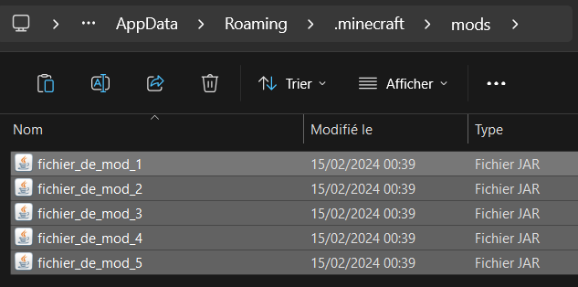
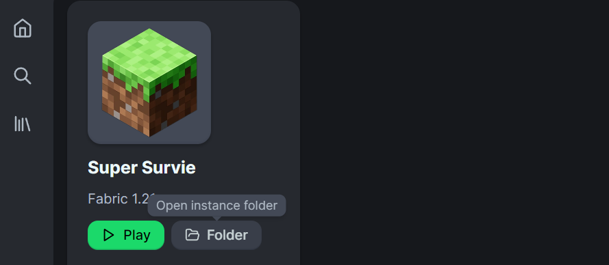

Etape 2
Optimiser Minecraft (si possible)
⚠️ Attention, ce qui suit est uniquement disponible sur minecraft [JE]* (Définition en haut), et est conseillé pour PC.
Télécharge les Mods
👉 Des mods sont des fichiers de code créés par la communauté, apportant des modifications au jeu. Ils permettent le plus souvent d'ajouter du contenu au jeu, mais ceux-ci améliorent la rapidité et l'optimisation de ton jeu, pour un Minecraft plus agréable. Télécharge ce pack de mods :
Mods d'Optimisation⚠️ Attention, tout mod recquiert "Fabric" pour fonctionner, c'est une version de Minecraft spéciale qui te sera présentée à l'étape 4.
Localise les mods téléchargés
👉 Ouvre ton explorateur de fichiers avec tes "Téléchargements"

👉 Entre dans le dossier compressé "Mods_Opti", sélectionne tous les fichiers ([CTRL] + [A]), et copie-les ([CTRL] + [C]).

Installe les Mods
❓ Le "launcher", c'est l'application que tu lances pour cliquer sur "Jouer" et démarrer Minecraft.
👉 Presse les touches [Windows] et [R] en même temps. Une petite fenêtre s'ouvre : inscris-y "%appdata%" et confirme.

👉 Dans le nouvel Explorateur de fichiers ouvert, entre dans le dossier ".minecraft" puis "mods". Si aucun dossier "mods" n'existe, crées-en un.
👉 Colles-y ([CTRL] + [V]) tous les fichiers copiés précédemment.
👉 Ouvre ton launcher, puis sélectionne ton instance créée. Clique sur "Folder" pour y retrouver les fichiers du jeu.
👉 Dans le nouvel Explorateur de fichiers ouvert, entre dans le dossier "mods".

👉 Colles-y ([CTRL] + [V]) tous les fichiers copiés précédemment.
En cours de rédaction, bientôt disponible !
🏆 Ca y est ! Les mods sont placés
Tu peux alors passer à l'étape 3 !